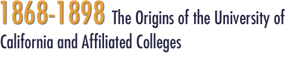
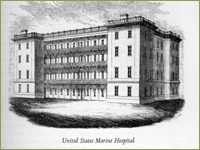
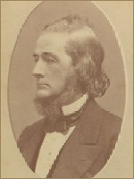
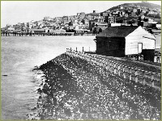
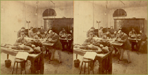
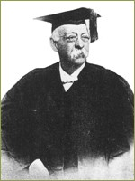

In 1854, six Sisters of Mercy arrived from Ireland. They won praise for cleaning up the hospital environment after a series of scandals over poor care and for nursing patients through cholera and smallpox. The Sisters of Mercy stayed in San Francisco and continued to provide hospital care in a setting that eventually became St. Mary’s Hospital. By 1857 the City and County Hospital was located in the former North Beach School at the southwest corner of Francisco and Stockton Streets. In order to help relieve crowding, in 1867 the city of San Francisco built a large almshouse near Laguna Honda on eighty acres of city-owned land on the western side of Twin Peaks. The following year the city created a 24-bed smallpox isolation hospital on the Laguna Honda grounds.
The school catalogue reflected Toland's insistence on the importance of clinical instruction. Lectures were given at San Francisco City and County Hospital
Toland's first class consisted of eight students, mostly drawn from the Cooper Medical College. The faculty of this lapsed medical college were asked to serve on the Toland roster, and Drs. Levi Cooper Lane, Henry Gibbons, Sr., and John F. Morse joined the faculty with some ambivalence. Significantly, R. Beverly Cole, the Dean and professor of obstetrics and diseases of women and children at Cooper, was not asked by Toland to join his new faculty.
R. Beverly Cole returned from a tour of Europe in 1867 and was appointed Surgeon General of the State of California in recognition of his valuable public health efforts. As a member of the Outside Lands Committee of the San Francisco Board of Supervisors, Cole became a well-known figure in the city's political arena. He supported the establishment of Golden Gate Park on the western edge of the city. Cole simultaneously persuaded the local health board to condemn the old City and County Hospital building, and a new institution was planned at Potrero Nuevo, a site nearly four miles southeast of Toland's College. The impression among San Francisco's medical fraternity was that Cole had finally achieved his revenge for Toland's past rebuffs by weakening the College's vital link to the world of clinical medicine. Eventually, however, Dr. Cole would join the Toland medical faculty and become instrumental in the affiliation negotiations with the University of California.
>> California Pharmaceutical Society
San Francisco’s First Medical Institutions: Hospitals and Pesthouses
Well before individual practitioners succeeded in organizing themselves into professional societies, the needs of the public’s health prompted official government action on behalf of the San Francisco citizens. The task of removing the seriously ill or indigent from the streets and the threat of major epidemics prompted the city to provide for hospital care, first in tents and board sheds under supervision of contracting physicians. In 1850 a state bill appropriated $50,000 to build a State Marine Hospital in San Francisco.

Meanwhile, in 1851 the U.S. Congress created a U.S. Marine Hospital in San Francisco, which was completed in 1853 and provided accommodations for an additional 500 patients. In 1855 the State Marine Hospital building was transformed into the City and County Hospital of San Francisco, supported by fees collected by a public health officer who inspected every vessel that entered the port. U.S. Marine Hospital, created by Congress and built in 1853.
In 1854, six Sisters of Mercy arrived from Ireland. They won praise for cleaning up the hospital environment after a series of scandals over poor care and for nursing patients through cholera and smallpox. The Sisters of Mercy stayed in San Francisco and continued to provide hospital care in a setting that eventually became St. Mary’s Hospital. By 1857 the City and County Hospital was located in the former North Beach School at the southwest corner of Francisco and Stockton Streets. In order to help relieve crowding, in 1867 the city of San Francisco built a large almshouse near Laguna Honda on eighty acres of city-owned land on the western side of Twin Peaks. The following year the city created a 24-bed smallpox isolation hospital on the Laguna Honda grounds.
San Francisco’s First Medical Schools
In 1858 California surgeon Elias Samuel Cooper organized the Medical Department of the University of the Pacific with a board of trustees consisting of ten clergymen and three physicians. The first session opened in May 1859, with a class of ten attending lectures in materia medica, chemistry, physiology, anatomy and medical jurisprudence. Dr. Cooper's death in 1862 brought confusion to the new school, and in 1864 the Pacific Medical faculty "suspended" activities and joined Dr. Hugh Toland in his efforts to found a viable medical school in San Francisco.

As San Francisco's population continued to grow, Hugh Toland's influence and wealth also increased, earning an estimated $40,000 per year. In 1864, he decided to establish a medical school in San Francisco and purchased land for that purpose in North Beach, at Stockton and Francisco, opposite the San Francisco City and County Hospital. A handsome building was soon completed, and Toland Medical College was open for enrolment. Clinical instruction and dissecting experience were the centerpieces of Toland's educational program, reflecting his training and experience in Parisian hospitals where clinical findings were carefully correlated with autopsy results.
Hugh Huger Toland (b. 1806, d. 1880)
The school catalogue reflected Toland's insistence on the importance of clinical instruction. Lectures were given at San Francisco City and County Hospital

where a "senior student examines the patient; announces the diagnosis and prognosis and views about treatment before class, discussion follows, complete clinical histories are kept and there are broad opportunities for autopsies." Just a month after classes began, the state of California approved a dissection law permitting pauper bodies to be studied by accredited physicians, thus opening the way for Toland students to gain experience doing dissection.
In his inaugural speech, Dr. Toland offered the hope that the school would "spring into usefulness and become an ornament to the city and an honor to the state." From 1864 to 1872 Toland Medical College benefited from close proximity to the City-County Hospital (adjacent at right).
Toland's first class consisted of eight students, mostly drawn from the Cooper Medical College. The faculty of this lapsed medical college were asked to serve on the Toland roster, and Drs. Levi Cooper Lane, Henry Gibbons, Sr., and John F. Morse joined the faculty with some ambivalence. Significantly, R. Beverly Cole, the Dean and professor of obstetrics and diseases of women and children at Cooper, was not asked by Toland to join his new faculty.

The Toland Medical College quickly prospered. Its faculty of eight offered two four-month courses costing $130 and leading to the degree of doctor of medicine. In the valedictory address to the first graduating class of Toland Medical College in 1865, Toland urged his graduates to devote a portion of every day to the study of monographs and medical journals to remain professionally competitive. While boasting that he had built and furnished the school with his own resources, Toland also made a direct pitch to the new alumni to help their alma mater by supplying medical books. "When success crowns your efforts," he urged, "contribute in proportion to your ability and prepare a niche in this institution which will bear your names and transmit them to posterity."
Medical Students in Toland Medical College Dissecting Room, ca 1870. Photo by Eadweard Muybridge (Courtesy of the Bancroft Library, UC Berkeley).
R. Beverly Cole returned from a tour of Europe in 1867 and was appointed Surgeon General of the State of California in recognition of his valuable public health efforts. As a member of the Outside Lands Committee of the San Francisco Board of Supervisors, Cole became a well-known figure in the city's political arena. He supported the establishment of Golden Gate Park on the western edge of the city. Cole simultaneously persuaded the local health board to condemn the old City and County Hospital building, and a new institution was planned at Potrero Nuevo, a site nearly four miles southeast of Toland's College. The impression among San Francisco's medical fraternity was that Cole had finally achieved his revenge for Toland's past rebuffs by weakening the College's vital link to the world of clinical medicine. Eventually, however, Dr. Cole would join the Toland medical faculty and become instrumental in the affiliation negotiations with the University of California.
University Affiliation
By 1870, Toland Medical College had a class of thirty students and had already granted diplomas to forty-five graduates. In that year, Toland sought to affiliate his medical school to the University of California, which itself was not yet two years old. In March 1873, the trustees deeded the Toland Medical College to the University of California Regents and the faculty minutes for the first time bore the heading, "The Medical Department of the University of California."

R. Beverly Cole became the dean and twenty-seven students were enrolled in the first class. Toland's donation was appraised at the time at $100,000 in buildings, lands, and instructional equipment, a gift that substantially increased the holdings of the young state university. On September 15, 1874, the regents adopted a resolution stating that "young women offering themselves for admission and passing the required examination must be received to all the privileges of the Medical Department." Responding to this new policy, schoolteacher Lucy Wanzer matriculated and in 1876 became the first female graduate of the Medical Department of the University of California. Many other young women followed her precedent, among them Mayor Adolf Sutro's daughter. In the subsequent five decades, roughly 10 percent of each graduating class was female, far in advance of the national average of 4 percent.Prof. R. Beverly Cole, Medical Department of the University of California.
>> California Pharmaceutical Society
{% include footer.html %}